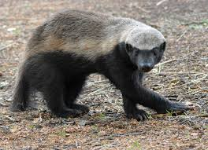

Introduction
Welcome to the World of the honey badger — some of the toughest little animals on the planet.
There are a lot of places that the honey badger calls home but the most common place is in sub-Saharan Africa.
Explore the strength
and courage of the honey badger
This webpage will answer your questions and tell you all about this fierce and amazing animal.